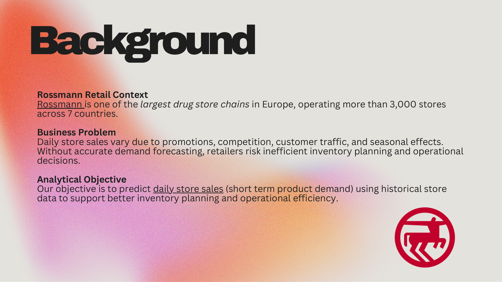
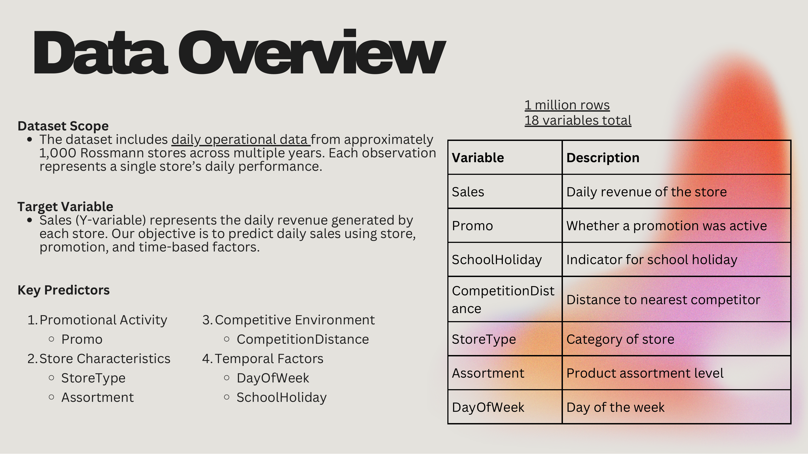
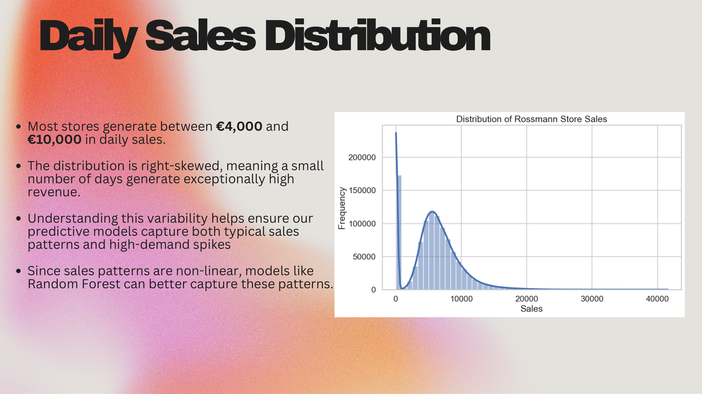
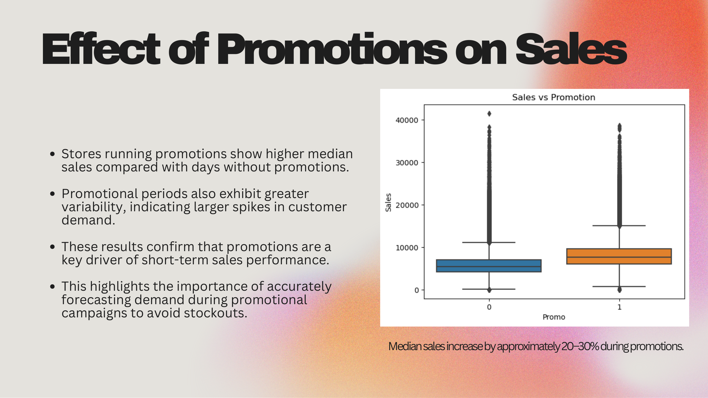
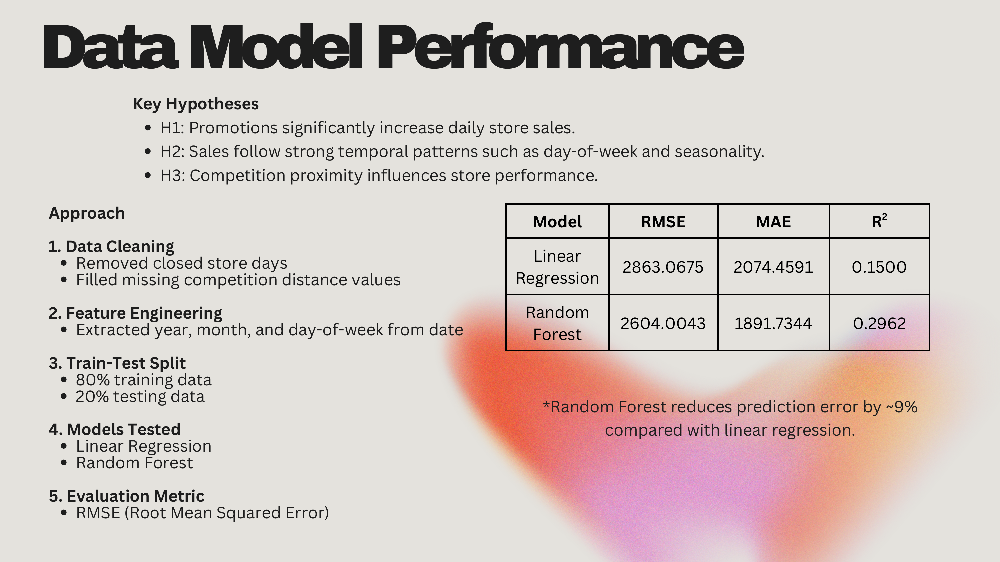
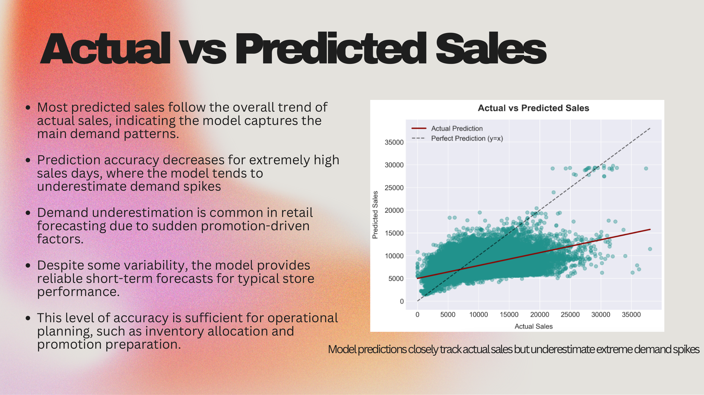
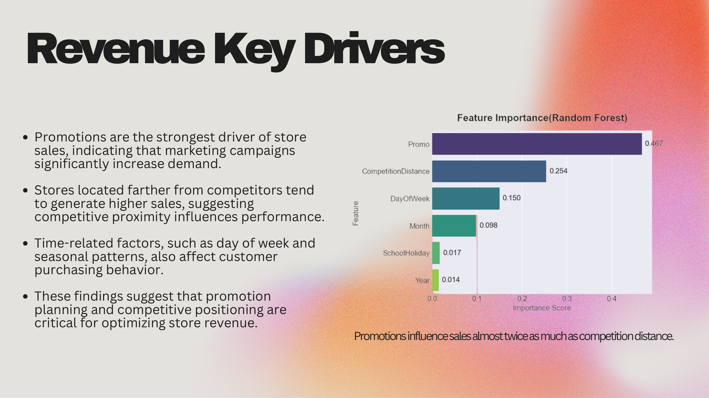
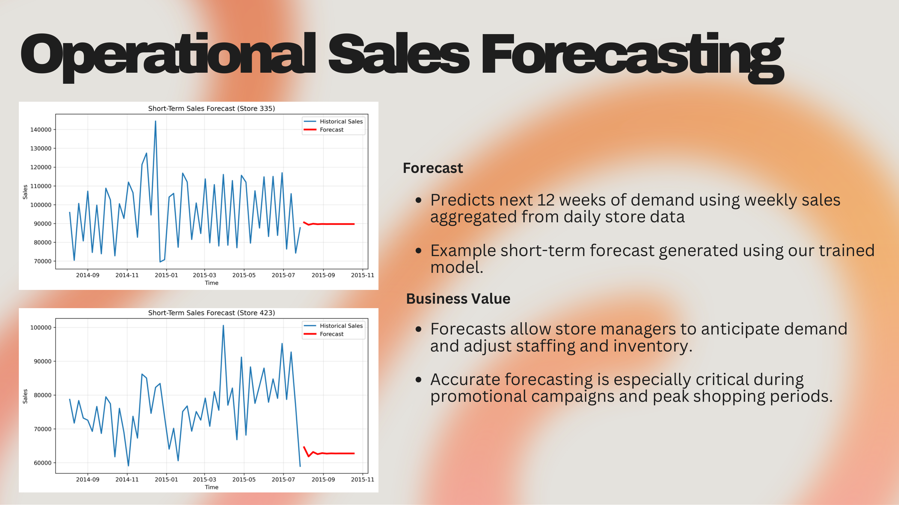
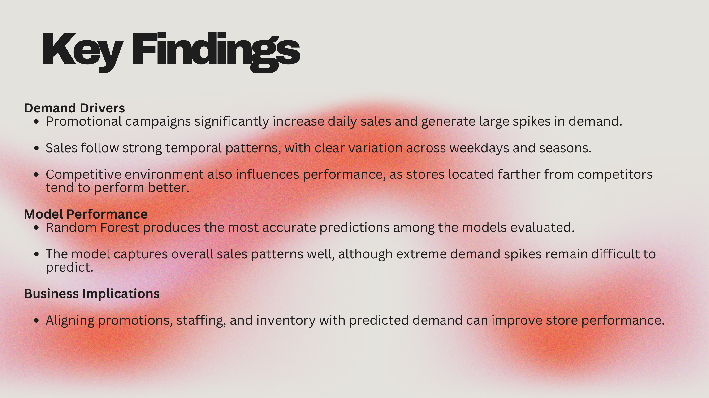

Retail Demand Forecasting
Predicting daily store sales for a European drugstore chain to support inventory and operations.
Daily store sales swing with promotions, competition, customer traffic, and seasonality. Without accurate forecasts, retailers over-stock or under-stock and make costly operational decisions. Using roughly one million rows of daily data from Rossmann, one of Europe's largest drugstore chains, we built a model to predict each store's daily sales.
Approach
We cleaned the data by removing closed-store days and filling missing competition-distance values, engineered time features (year, month, day of week), and split the data 80/20 for training and testing. We compared Linear Regression against a Random Forest, evaluating both on RMSE, MAE, and R-squared.
The aim was a forecast accurate enough to guide inventory and staffing, while staying interpretable about what drives sales.
From the deck









What I learned
The clearest driver of sales was promotions, which influenced demand nearly twice as much as competition distance and produced the largest spikes. Random Forest captured these non-linear patterns far better than Linear Regression, reaching an R-squared of about 0.30 and cutting error by roughly 9 percent.
The model is reliable for typical store performance and good enough for operational planning like inventory allocation and promotion prep, but it consistently underestimates extreme demand spikes. That gap is the practical limit: forecasting the everyday is solved, while the rare blockbuster days still need a human margin of safety.